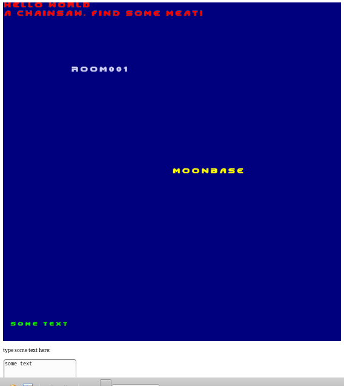

I wrote a font-generator and font rendering library for both OpenGL and WebGL. Nothing about this basic task was simple to implement! I wrote some tutorials about how to generate fonts with a tool, and draw them by hand.